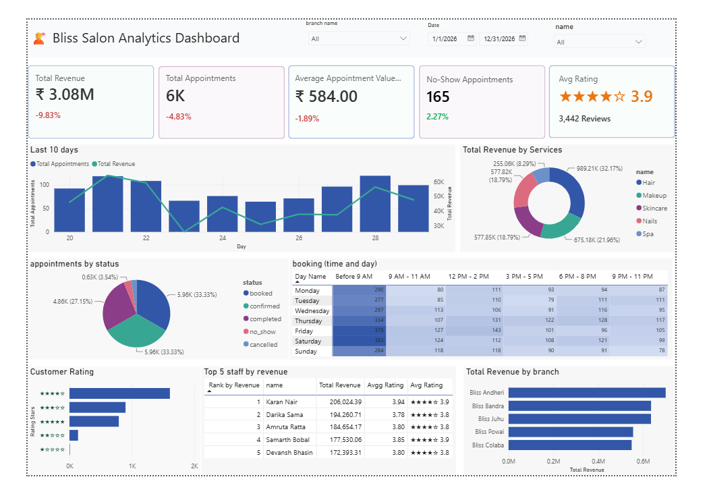

hey, i'm
I build Python-powered applications and data systems that turn messy data into useful, real-world solutions.✿
about me
I like working across the data journey — from cleaning and exploring data to building models, pipelines and simple applications around it.
I've worked with Python, SQL, Pandas, Scikit-learn, PySpark, Kafka and Power BI, and I've built projects around analytics, machine learning, NLP and data engineering.
I enjoy learning new things, building practical projects, and turning data into something useful.
▸ things I enjoy working with
>>> from ayushi import skills >>> skills.top(3) ['python', 'sql', 'data science'] >>> skills.status 'open to work ✿'
what I work with
the good stuff
Semantic search and sentiment over 3.7M Sephora reviews.
Star ratings flatten everything. A 4.4 tells you nothing about whether a cleanser breaks out acne-prone skin or whether people only hate the pump. This tool lets the review text itself answer the buying question — searchable by meaning across 8K products.
what I built
what I learned: precomputation is a design decision, not an optimization.
Kafka to PySpark to Postgres to live Power BI.
A multi-branch salon chain reviewed performance from a spreadsheet exported once a week. No-shows, inventory dips and staff load were discovered days too late to act on — so I built a live pipeline instead.
what I built
project preview

A real-time salon analytics platform built with Kafka, PySpark, PostgreSQL and Power BI.
the idea
A dashboard portal designed to give different users access to the right BI resources through authentication and role-based permissions.
what I built
Is this tweet about a real disaster, or just a metaphor?
A text classification model that identifies whether a tweet describes a real disaster or is simply using disaster-related language metaphorically.
the project
Built and deployed a machine learning classifier that processes tweet text and predicts whether it refers to an actual disaster.
what I worked on
tools I use
a little extra
python
If there's a repetitive task, I'll probably try to automate it.
data
I like finding the interesting story hidden inside messy data.
currently
Learning, building, and looking for the next interesting problem.
say hi
Interested in working together? I'd love to hear from you.